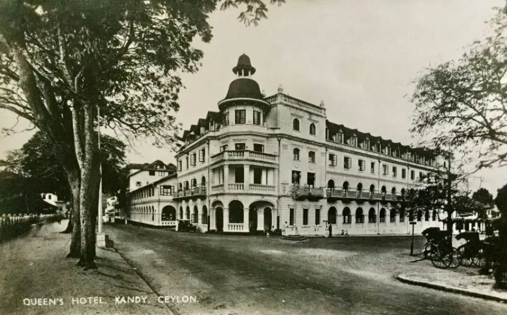
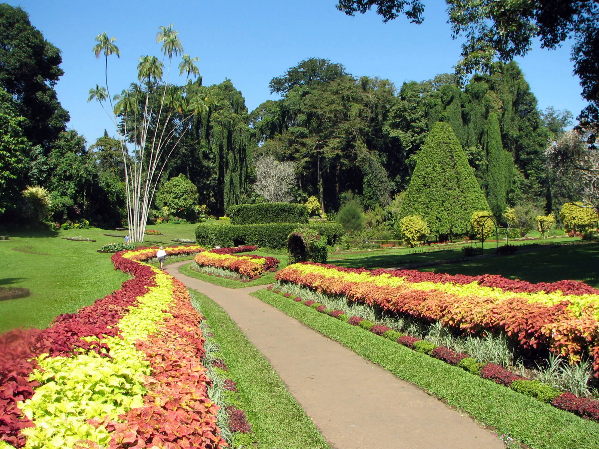

The city and the region have been known by many different names and versions of those names. Some scholars suggest that the original name of Kandy was Katubulu Nuwara located near the present Watapuluwa. However, the more popular historical name is Senkadagala or Senkadagalapura, officially Senkadagala Siriwardhana Maha Nuwara (meaning 'great city of Senkadagala of growing resplendence'), generally shortened to 'Maha Nuwara'. According to folklore, this name originated from one of the several possible sources. One being the city was named after a brahmin with the name Senkanda who lived in a cave nearby, and another being a queen of Vikramabahu III was named Senkanda, and after a coloured stone named Senkadagala. The Kingdom of Kandy has also been known by various names. The English name Kandy, which originated during the colonial era, is derived from an anglicised version of the Sinhala Kanda Uda Rata (meaning the land on the mountain) or Kanda Uda Pas Rata (the five counties/countries on the mountain). The Portuguese shortened this to "Candea", using the name for both the kingdom and its capital. In Sinhala, Kandy is called Maha nuwara, meaning "Great City" or "The Capital", although this is most often shortened to Nuwara.
History-:

Kandy, important independent monarchy in Ceylon (Sri Lanka) at the end of the 15th century and the last Sinhalese kingdom to be subjugated by a colonial power. Kandy survived the attacks of Ceylon’s first two colonial rulers—the Portuguese and the Dutch—and finally succumbed to the third and last colonial ruler, the British, in 1818. While all the other Sinhalese kingdoms had been extinguished by the Portuguese in the early 1600s, Kandy survived with stubborn persistence for another two centuries.
Under Portuguese rule, Kandy allied itself with the Dutch; under Dutch rule, it sought assistance from the British. From the time of the British takeover of Ceylon in 1796, Kandy was thrown on its own resources. The British considered the continued independence of Kandy a hindrance to the expansion of both their trade and their communications network in Ceylon. The first British attack against Kandy in 1803 was a failure. By 1815, however, the Kandyan chiefs became dissatisfied with their tyrannical king (of South Indian descent) and welcomed British intervention. In the ensuing agreement of 1815, the Kandyan Convention, the Kandyan king was deposed and sovereignty was vested in the British crown, but the rights of the Kandyan chiefs were largely maintained. Soon, the chiefs became dissatisfied with this arrangement and openly rebelled in 1817 but were decisively subjugated by the British in 1818. Ceylon was thus brought, for the first time in many centuries, under unified rule.
Parks And Gardens-:

The Royal Botanical Garden, Peradeniya is situated about 5 km to the west of the city centre at Peradeniya and is visited by 2 million people per year. It is the largest botanical garden on the island extending to 147 acres (59 ha) and containing over 4000 species of plants. Knuckles Mountain Range in Kandy is a world heritage site of UNESCO. Alagalla Mountain Range also named in English as Potato Range both famous for trekking in Sri Lanka. The Udawatta Kele (Udawatta Forest) is a protected sanctuary situated in the heart of the city, just north of Temple of the Tooth. Known as "Uda Wasala Watta" in Sinhala meaning, "the garden situated above the royal palace", it was designated as a forest reserve in 1856, and it became a sanctuary in 1938.
The Royal Palace Park, known as Wace Park is a small park that overlooks Kandy Lake and most of the city. In the park is a Japanese field gun which was captured by the British 14th Army in Burma during World War II and presented to the city of Kandy by Lord Mountbatten, Supreme Allied Commander South East Asia Theatre.
Culture-:

Kandyans do many things for leisure and entertainment in the city. Kandy is popular due to the annual procession known as the Esala Perahera,[citation needed] in which one of the inner caskets used for covering the tooth relic of Buddha is taken in a grand procession through the streets of the city. This casket is taken on a royal tusker. The procession includes traditional dancers and drummers, flag bearers of the provinces of the old Kandyan kingdom, the Nilames (lay custodians of temples ) wearing their traditional dresses, torch-bearers, and also the grandly attired elephant. This ceremony which is annually held in the months of July or August attracts large crowds from all parts of the country and also many foreign tourists.
Kandy City Centre is commercial and shopping complex open in 2005 at Dalada Veediya. Is the most modern commercial complex in Sri Lanka. The complex is studded with ultra-modern features, also incorporating the traditional architecture of Kandy during the medieval period of Sri Lanka. The city centre is host to several leading banks, a fully equipped supermarket, modern restaurants, an entertainment zone, a well-designed state-of-the-art food court, Sri Lanka's leading book shops, flora, and an Ayurveda site. There is a five-level car park outside that is the largest car park in Kandy.